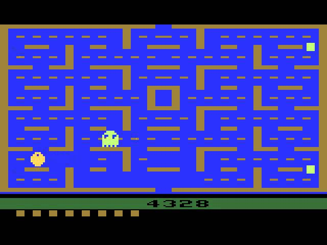

Wave84 - A História dos Video Games
Explore a fascinante jornada dos video games desde os primórdios até os dias atuais. Descubra como uma simples diversão se transformou na maior indústria de entretenimento do mundo.
Marcos Históricos
1970s - O Início
Os primeiros arcades e consoles caseiros como Magnavox Odyssey e Atari 2600 revolucionaram o entretenimento doméstico.
1980s - A Era de Ouro
Nintendo e Sega dominam o mercado com clássicos como Super Mario Bros. e Sonic the Hedgehog.
1990s - Revolução 3D
A transição para gráficos 3D com PlayStation e Nintendo 64 redefine os padrões da indústria.
Consoles Icônicos
Atari 2600 (1977)

O console que popularizou os jogos caseiros com títulos como Space Invaders e Pac-Man.
Nintendo NES (1983)
Revitalizou a indústria após a crise de 1983 com Super Mario Bros. e The Legend of Zelda.
PlayStation (1994)

Introduziu os CDs e estabeleceu a Sony como gigante dos games com Final Fantasy VII.
Jogos que Marcaram Época
Clique na Imagem para jogar!
Super Mario Bros. (1985)

Definiu o gênero platformer e estabeleceu Mario como ícone dos video games.
The Legend of Zelda (1986)
Pioneiro nos RPGs de ação com mundo aberto e exploração não-linear.
Doom (1993)
Revolucionou os FPS e popularizou o multiplayer deathmatch.
Junte-se à Nossa Comunidade
Participe de discussões, compartilhe memórias e descubra curiosidades sobre a história dos video games com outros entusiastas.